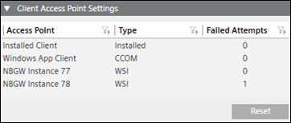

Additional User Administration Procedures
Prerequisites
- System Manager is in Engineering mode.
- System Browser is in Management View.
- Project > System Settings > Users is selected.
Change a Password
You are not logged on with a Windows account but as a local user.
- In the Users list, select a user.
- In the Change Password expander, enter a new password. Ensure that the password meets the complexity requirements, if you have selected the Password must meet complexity requirements check box in the Security expander in SMC. (See Security expander in SMC System Settings.)
- Confirm the new password.
- Apply is enabled if the password matches.
- Click Apply.
NOTE: The password cannot be saved with .
.
- The new password is saved.
Change User Account Type
An existing local user can be changed to a Windows user (or vice versa). The existing user settings are retained.
- In the Users list, select a user.
- Click Edit
 .
. - Select one of the following user types:
- Desigo CC : see New Local User
- Windows: see New Local Windows User
- Click OK.
- Click Save .
- The user account is changed and you can log on to Desigo CC.
Delete Users
- In the Users list, select a user or use multi-select by pressing the CTRL or SHIFT keys.
- Click Delete
 .
. - A confirmation message box displays with the number of selected users.
- Click Yes.
- The user is deleted and can no longer logon.
- A history log entry is created for each deleted user.
Demote a Global User to a Local User
Scenario: In a distributed system, a global user must be demoted to a local user.
- In the master system, select Project > System Settings > Users.
- Select the Users tab.
- In the Users list, select a user.
- Click Demote .
- Click Yes.
NOTE: In distributed systems, demoting software account might lead to some inconsistencies in the workflow where this account is in use, for example, Advanced Reports, OPC server, Power Manager or Building X Connector.
- The demoted user has access to the local system only.
Disable Default User Administrator
Scenario: For security reasons, the DefaultAdmin account must be disabled when handing over a project to the customer.
- There is an administrator user account available that has the same comprehensive rights as the DefaultAdmin account.
- You are not logged in as DefaultAdmin.
- In the Users list, select DefaultAdmin.
- Clear the Enabled check box.
- Click Save .
- The DefaultAdmin user is disabled and cannot log on to Desigo CC.

NOTE:
You can re-enable the DefaultAdmin account at any time with the appropriate user rights.
Disable User
- In the Users list, select a user or use multi-select by pressing the CTRL or SHIFT key.
- Clear the Enabled check box for the user.
NOTE: When you use multi-select, the check box next to the last selected user takes on the master function. Checking or clearing it, checks or clears the check boxes of all selected users. - Click Save .
- The user is disabled and cannot logon to Desigo CC.
- A history log entry is created for each disabled user.
NOTE:
You cannot disable the account you are logged on with.
Modify a User
- In the Users list, select a user.
- Change the desired settings for the user.
- Click Save .
- The user is modified.
Promote a Local User to a Global User
Scenario: In a distributed system, a local user must be promoted to a global user.
- In the master system, select Project > System Settings > Users.
- Select the Users tab.
- In the Users list, select a user.
- Click Promote .
- Click Yes.
NOTE: In distributed systems, promoting software account might lead to some inconsistencies in the workflow where this account is in use, for example, Advanced Reports, OPC server, Power Manager or Building X Connector.
- The promoted user has access to the distributed system.
Remove a User Group from a User
- In the Users list, select a user.
- In the User Configuration expander, highlight the appropriate user group.
- Click Remove.
- Click Save .
- The user no longer has any rights from the unassigned user group.
Reset a Temporarily Locked Local/Global User
Scenario: After entering an incorrect password multiple times, when the user exceeds the number of invalid logon attempts configured in the Invalid logon attempts field, the user account is locked for the time duration specified in the Account lockout duration policy (see, Security Expander in SMC System Settings). To unlock the account, the user needs to wait for the specified time duration in the Account lockout duration policy or contact the Desigo CC administrator to have the account unlocked.
NOTE:
a. After the waiting period, only one logon attempt is possible. If an incorrect password is entered, the account will be locked again for the same time duration as specified in the Account lockout duration policy.
b. Every successful logon attempt on an access point will reset the value of the Failed Attempts field, for that particular access point only.
c. If a user using a WSI type of access point is locked, then still the same user can logon to the another WSI/AFW/CCOM access point.

- You have the adequate level of Application Rights for the Users Configure application.
- In the Users list, select the locked user.
- In the Client Access Point Settings expander, click Reset.
- Click Save .
- All the failed attempts for all the access points, used by a Desigo CC. user is reset to zero and the user is unlocked for all the access points.
NOTE 1:
After the waiting period, only one logon attempt is possible. If an incorrect password is entered, the account will be locked again for the same time duration as specified in the Account lockout duration policy.
NOTE 2:
Every successful logon attempt on an access point will reset the value of the Failed Attempts field, for that particular access point only.
NOTE 3:
If a user using a WSI type of access point is locked, then still the same user can logon to the another WSI/AFW/CCOM access point.
Search for Users with no Groups Assigned
- Click User with no groups
 .
. - The users without user group assigned are filtered.
Sort Users
- Click the Users column header.
- Users are sorted alphabetically from A-Z.
- (Optional) Click the Users column header again.
- Users are now sorted alphabetically from Z-A.